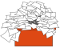

Template:Busy/ro
Jump to navigation
Jump to search

NOTE: Please do not use this template directly! This is just for translation. Use {{Busy}} instead.
|  | Acest utilizator este ocupat în viața reală și este posibil să nu răspundă rapid cererilor.
Bahasa Indonesia ∙ dansk ∙ italiano ∙ sicilianu ∙ Deutsch ∙ euskara ∙ magyar ∙ čeština ∙ português do Brasil ∙ română ∙ español ∙ português ∙ English ∙ français ∙ Nederlands ∙ polski ∙ galego ∙ Simple English ∙ slovenščina ∙ suomi ∙ svenska ∙ Tiếng Việt ∙ Türkçe ∙ беларуская ∙ беларуская (тарашкевіца) ∙ македонски ∙ русский ∙ српски / srpski ∙ українська ∙ ქართული ∙ հայերեն ∙ বাংলা ∙ മലയാളം ∙ ไทย ∙ မြန်မာဘာသာ ∙ 한국어 ∙ 日本語 ∙ 中文（简体） ∙ 中文（繁體） ∙ العربية ∙ فارسی ∙ +/− |